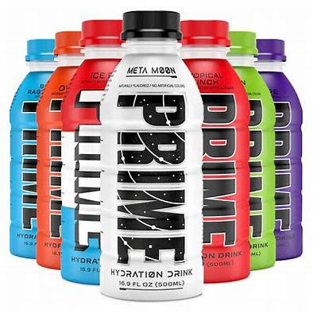

PRIME is a popular energy drink created by the YouTubers Logan Paul and KSI, created on January 4, 2022, and affiliated with Congo Brands. It is co-owned by American businessmen Max Clemons and Trey Stieger, PRIME is widely known as a sport drink used by athletes. PRIME is currently “the official sport drink of the LA Dodgers”. Not only that, but it has also sponsored other teams, such as the Arsenal soccer team. There are more than ten flavors of PRIME including Tropical punch, Blue raspberry, Lemon Lime, Strawberry Watermelon, Meta Moon, Grape, Ice Pop, Lemonade, Orange, Dodger PRIME, KSI flavor orange mango, WWE 39 PRIME and WrestleMania PRIME. PRIME has been promoted across many various social platforms, mostly from Logan Paul and KSI’s growing presence there, but other people help promote it too.
Although PRIME is loved by people everywhere, it has some negative impacts on your health. Because of this, several schools in Australia have imposed a ban on Energy PRIME because of its surprisingly high caffeine levels. ABC News noted that the Food Standards in Australia, New Zealand have set the legal limit for caffeine at 32 milligrams for every 100 milliliters drank. PRIME contains 56 milligrams for every 100 milliliters. The manufacturers state that the zero sugar version of the product has zero added sugar or caffeine and has around 20 calories per bottle. It is sweetened with acesulfame potassium and sucralose, like many other sugar-free drinks.
The question is, if schools in Australia have banned PRIME Energy, that contains caffeine, have they banned regular PRIME? It turns out that in Australia and New Zealand, PRIME is not able to be legally sold, no matter what flavor it is.